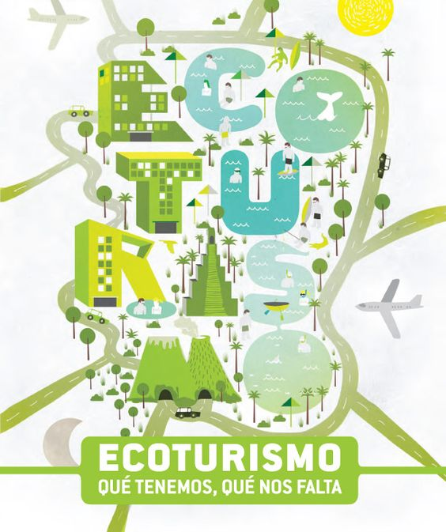
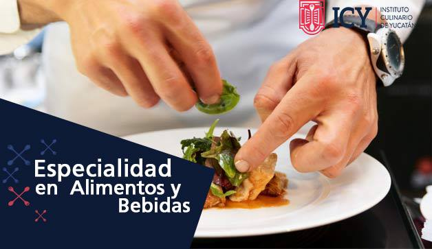
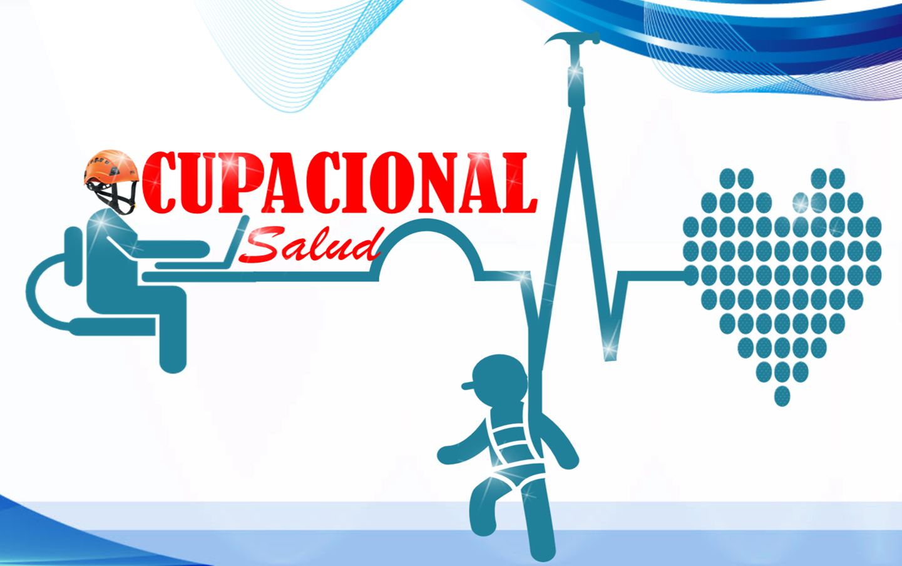

Especialidades
Especialidades que se brindan

Informatica Empresarial
La especialidad Informática Empresarial, surge a raíz de la necesidad de formar técnicos medios en Informática con conocimientos empresariales, los cuales le permitirán ser autogestionadores en el mercado laboral.

Turismo Ecologico
Esta especialidad se orienta con el proceso de enseñanza del Turismo Ecológico,enfocado en las actividades turísticas las que se privilegia la sustentabilidad, preservación y la apreciación del medio que acoge a los viajantes.

Alimentos y bebidas
La carrera de Técnico en preparación de alimentos y bebidas surge como una vertiente de la carrera de Servicios Turísticos.

Salud Ocupacional
Esta especialidad se ocupa en formar y desarrollar educandos a un nivel de técnico profesional, que posean los conocimientos, habilidades y destrezas de los principios básicos de la seguridad y salud ocupacional.